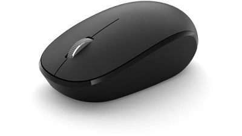
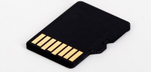

Hardware, which is abbreviated as HW, refers to all physical components of a computer system, including the devices connected to it. You cannot create a computer or use software without using hardware. The screen on which you are reading this information is also a hardware.
A hardware upgrade refers to a new hardware, or a replacement for the old one, or additional hardware developed to improve the performance of the existing hardware. A common example of a hardware upgrade is a RAM upgrade that increases the computer's total memory, and video card upgrade, where the old video card is removed and replaced with the new one.
The motherboard is generally a thin circuit board that holds together almost all parts of a computer except input and output devices. All crucial hardware like CPU, memory, hard drive, and ports for input and output devices are located on the motherboard. It is the biggest circuit board in a computer chassis.
It allocates power to all hardware located on it and enables them to communicate with each other. It is meant to hold the computer's microprocessor chip and let other components connect to it. Each component that runs the computer or improves its performance is a part of the motherboard or connected to it through a slot or port.
There can be different types of motherboards based on the type and size of the computers. So, a specific motherboard can work only with specific types of processors and memory.
CPU Slot: It is provided to install the CPU. It is a link between a microprocessor and a motherboard. It facilitates the use of CPU and prevents the damage when it is installed or removed. Furthermore, it is provided with a lock to prevent CPU movement and a heat sink to dissipate the extra heat.
RAM Slot: It is a memory slot or socket provided in the motherboard to insert or install the RAM (Random Access Memory). There can be two or more memory slots in a computer.
Expansion Slot: It is also called the bus slot or expansion port. It is a connection or port on the motherboard, which provides an installation point to connect a hardware expansion card, for example, you can purchase a video expansion card and install it into the expansion slot and then can install a new video card in the computer. Some of the common expansion slots in a computer are AGP, AMR, CNR, PCI, etc.
Capacitor: It is made of two conductive plates, and a thin insulator sandwiched between them. These parts are wrapped in a plastic container.
Inductor (Coil): It is an electromagnetic coil made of a conducting wire wrapped around an iron core. It acts as an inductor or electromagnet to store magnetic energy.
Northbridge: It is an integrated circuit that allows communications between the CPU interface, AGP, and memory. Furthermore, it also allows the southbridge chip to communicate with the RAM, CPU, and graphics controller.
USB Port: It allows you to connect hardware devices like mouse, keyboard to your computer
PCI Slot: It stands for Peripheral Component Interconnect slot. It allows you to connect the PCI devices like modems, network hardware, sound, and video cards.
AGP Slot: It stands for Accelerated Graphics Port. It provides the slot to connect graphics cards.
Heat Sink: It absorbs and disperses the heat generated in the computer processor.
Power Connector: It is designed to supply power to the motherboard.
CMOS battery: It stands for complementary metal-oxide-semiconductor. It is a memory that stores the BIOS settings such as time, date, and hardware settings.
A monitor is the display unit of a computer on which the processed data, such as text, images, etc., is displayed. It comprises a screen circuity and the case which encloses this circuity. The monitor is also known as a visual display unit (VDU).
CRT Monitor: It has cathode ray tubes which produce images in the form of video signals. Its main components are electron gun assembly, deflection plate assembly, glass envelope, fluorescent screen, and base.
LCD Monitor: It is a flat panel screen. It uses liquid crystal display technology to produce images on the screen. Advanced LEDs have thin-film transistors with capacitors and use active-matrix technology, which allows pixels to retain their charge.
LED Monitor: It is an advanced version of an LCD monitor. Unlike an LCD monitor, which uses cold cathode fluorescent light to backlight the display, it has LED panels, each of which has lots of LEDs to display the backlight.
Plasma Monitor: It uses plasma display technology that allows it to produce high resolutions of up to 1920 X 1080, wide viewing angle, a high refresh rate, outstanding contrast ration, and more.
It is the most important input device of a computer. It is designed to allow you input text, characters, and other commands into a computer, desktop, tablet, etc. It comes with different sets of keys to enter numbers, characters, and perform various other functions like copy, paste, delete, enter, etc.
A keyboards is an input device through which users can input text, numbers, and special characters. It is an input device with a typical QWERTY keyset. It is an external hardware device that is connected to the computer. It serves as the user's most fundamental interface with a system. It has numerous buttons that can be used to generate letters, numbers, and symbols as well as unique keys like the Windows and Alt keys that can also accomplish other tasks.

It is a small handheld device designed to control or move the pointer (computer screen's cursor) in a GUI (graphical user interface). It allows you to point to or select objects on a computer's display screen. It is generally placed on a flat surface as we need to move it smoothly to control the pointer. Types of Mouse: Trackball mouse, Mechanical Mouse, Optical Mouse, Wireless Mouse, etc.
A mouse can be wireless or wired. It is a portable pointing device that is used to interact with objects on computer screens with the help of moving the cursor around the screen. On the display screen, the cursor moves in the same direction as the users' mouse movements. The term "mouse" refers to a compact, wired, elliptical-shaped gadget that somewhat resembles a mouse.
Move the cursor: It is the main function of the mouse; to move the cursor on the screen.
Open or execute a program: It allows you to open a folder or document and execute a program. You are required to take the cursor on the folder and double click it to open it.
Select: It allows you to select text, file, or any other object.
Hovering: Hovering is an act of moving the mouse cursor over a clickable object. During hovering over an object, it displays information about the object without pressing any button of the mouse.
Scroll: It allows you to scroll up or down while viewing a long webpage or document.
Two buttons: A mouse is provided with two buttons for right click and left click.
Scroll Wheel: A wheel located between the right and left buttons, which is used to scroll up and down and Zoom in and Zoom out in some applications like AutoCAD.
Battery: A battery is required in a wireless mouse.
Motion Detection Assembly: A mouse can have a trackball or an optical sensor to provide signals to the computer about the motion and location of the mouse.
The items that are frequently attached to the computer from outside in order to control input or output functions are known as external hardware components, sometimes known as peripheral components. These hardware components either serve as input devices for the software or output devices for the output of the software's operations (output).
The following are examples of common input hardware components:
A microphone is an input device that converts sound waves into electrical impulses in order to allow computer-based audio communications. It was developed by Emile Berliner in 1877. It is used to enter audio into computers or transform sound waves into electric waves. It captures audio with the help of converting sound waves into an electrical signal that could be a digital or analog signal. This process can be implemented by a computer as well as other digital audio devices.
Visual pictures are captured by a camera, which then transmits them to a computer or a network device. A camera is a piece of equipment that takes photographs with the help of using photosensitive film or a plate inside of a light-proof housing. The photosensitive film is exposed to light via the camera's shutter, which opens and closes as the image is imprinted onto the film.
A touchpad is an input device that is also known as a glide pad, glide point, pressure-sensitive tablet, or trackpad. It enables finger cursor movement for the user. It can take the place of a regular mouse. To control the pointer on a display screen, a touchpad can be either external or incorporated into a laptop. Usually, it serves as a substitute for an external mouse.

A USB flash drive is a type of storage device for data that connects to a computer via a USB port and uses flash memory. It is an external, removable storage device that has a built-in Universal Serial Bus (USB) interface. Many USB flash drives can be removed and written to. They have a compact, reliable, and small physical design. They often operate more quickly the more storage space they have. Because there are no moving parts, USB flash drives are extremely mechanically durable.

A memory card is a kind of portable external storage device; video, photo, and other data files can be stored on it. A form of storage medium, which is additionally known as a flash memory. Also, it provides a volatile and non-volatile medium. It is frequently found in gadgets, including phones, laptops, digital cameras, camcorders, gaming consoles, MP3 players, printers, and more.
A printer is a hardware output device used to produce hard copies of documents or print them. It converts computer-generated electronic data into printed form. Text files, pictures, or a combination of the two can all be considered documents. It receives input commands from users so that computers or other devices may print the sheets. You must create a soft copy of your report and print it using a printer, for example, if your institution needs you to submit a project report.

One of the most popular output devices is a speaker that connects to a computer to generate a sound output. While some speakers can only be connected to computers, others can be used with any type of sound system.

These are also output devices much like speakers, which offer audio that can only be heard by one listener.
Hardware describes the physical parts of the computer or its delivery mechanisms that hold and execute the software's written instructions. The intangible component of the system software enables the user to communicate with the hardware and give commands to perform specific tasks. Computer software includes:
OS and associated tools;Virtual keyboards are not physical keyboards; therefore, they are also considered software on mobile devices and laptop computers.
The software must be developed to function properly with the hardware because they both are necessary for a computer to create usable output. Also, they depend on each other.
If any system has malware or malicious software, such as worms, spyware, viruses, and Trojan horses, they can have a significant impact on software and the operating system of a system. Malware, however, has no effect on hardware.
On the other hand, malware can impact the system in additional ways. For example, it can use up a lot of memory of the system or even reproduce itself to take up the entire hard drive. This can stop reliable programs from working and causes the computer to run slowly. Furthermore, users may not be able to access the files stored on the computer's hardware due to malware.
The abstraction of physical computing resources from the software that utilizes those resources is known as hardware virtualization. Put on another way; hardware virtualization is the process of creating virtual representations of hardware by using software rather than physical, tangible hardware components for various computing functions
A particular hardware platform by host software is used to execute hardware virtualization, and it is sometimes referred to as platform or server virtualization. It needs a hypervisor, a virtual machine manager that turns internal hardware into virtual forms. As a result, among OSes and applications, the hardware resources of one physical machine can be shared easily and used more efficiently.
In cloud computing, infrastructure as a service (IaaS), a delivery model that offers hardware resources over high-speed internet, is frequently associated with hardware virtualization. All of the hardware elements that are typically found in an on-premises data center, including servers, storage, and networking hardware, as well as the software that enables virtualization, are hosted by a cloud service provider (CSP), such as Amazon Web Services or Microsoft Azure.
IaaS and CSPs differ from hardware as a service (HaaS) providers in that they don't host software but only host hardware. A typical IaaS provider also offers a variety of services to go along with infrastructure parts, like the following:
billingOther storage resilience services are also provided by some CSPs, including disaster recovery, automated backup, and replication.
While buying computer hardware and occasionally replacing or upgrading it is common for individuals or businesses. People and businesses can also rent physical and virtual hardware from a service provider. The maintenance of the hardware, including all of its numerous physical parts and the software that runs on them, becomes the responsibility of the service provider. It is also called the HaaS model.
The most significant advantage of HaaS is it decreases the price of purchasing and maintaining hardware, allowing businesses to switch from a capital expenditure budget to a typically cheaper operational expense budget. Additionally, the majority of HaaS options are based on a pay-as-you-go model, which makes it simpler for businesses in order to manage expenditures while still having access to the hardware they require for their operational and business continuity.
HaaS involves installing physical parts that belong to a managed service provider (MSP) at a client's location. The responsibilities of both parties are defined by an SLA (service-level agreement).
For using the MSP's hardware, the customer may either pay a monthly cost or have it included in the MSP's fee schedule for setting up, maintaining, and monitoring the hardware. In either case, the MSP is in charge of fixing or replacing the hardware if it breaks down or becomes outdated.
Decommissioning hardware may involve physically destroying hard drives, deleting confidential data, and verifying that used equipment has been recycled legally on the basis of the SLA's requirements.
In modern times, troubleshooting computer hardware issues has become more convenient, faster, and easier as well. You can quickly determine which equipment is having problems if you have the correct IT inventory management tool.
The effectiveness of management procedures is greatly improved by automated IT inventory management software. You can deliver the best services by correlating, analyzing, and tracking changes with the help of these tools for asset management. They enable you to produce detailed records and define maintenance timeframes, which make it simpler to track the performance of each asset and reduce the need for manual updates.
The software has the ability to monitor hardware warranty, and expiration dates in addition to tracking and identifying hardware faults. These functions assist you in service level agreements, organizing upcoming purchases, and procurement plans in accordance with corporate requirements. The asset automatically updates the inventory as necessary if it finds configuration changes and performance issues. Software for managing hardware inventories can perform the following things, for example:
Immediately gather IT inventory data and auto-discover assets.